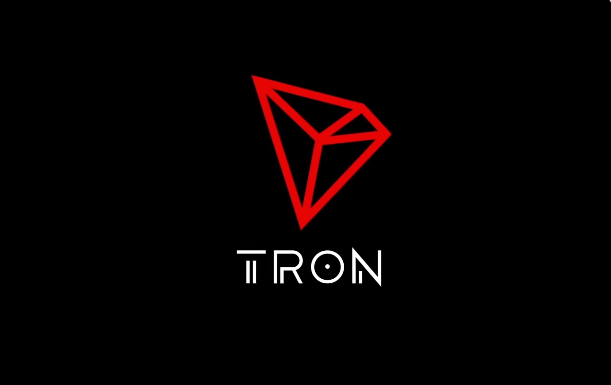

Tron
TRON is a decentralized, open-source blockchain-based operating system with smart contract functionality, proof-of-stake principles as its
consensus algorithm and a cryptocurrency native to the system, known as Tronix (TRX). It was established in March 2014 by Justin Sun and since 2017
has been overseen and supervised by the TRON Foundation, a non-profit organization in Singapore, established in the same year. It is originally an
Ethereum-based ERC-20 token, which switched its protocol to its own blockchain in 2018.
